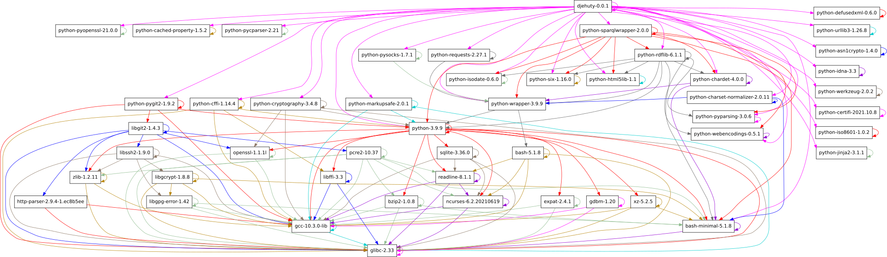

Introduction
djehuty is the data repository system developed by 4TU.ResearchData and Nikhef.
The name finds its inspiration in
Thoth, the Egyptian entity that
introduced the idea of writing.
Obtaining the source code
The source code can be downloaded at the
Releases
page. Make sure to download the djehuty-<version>.tar.gz file.
Or, directly download the tarball using the command-line:
curl -LO https://github.com/4TUResearchData/djehuty/releases/download/v<version>/djehuty-<version>.tar.gz
After obtaining the tarball, it can be unpacked using the tar command:
Installing the prerequisites
djehuty needs Python (version 3.9 or higher) and Git to be installed.
Additionally, a couple of Python packages need to be installed. The following
sections describe installing the prerequisites on various GNU/Linux
distributions. The figure below displays the complete run-time dependencies
from djehuty to glibc.

djehuty stores its information in a
SPARQL 1.1 endpoint. We recommend
either Blazegraph or
Virtuoso open-source edition.
If you prefer not to install dependencies manually, djehuty is also available
as container images, which bundle all dependencies and
are suitable for both development and production deployments.
Optional installation requirements depending on configuration
For specific features djehuty may require additional packages to be
installed. Whether this is the case depends on the run-time configuration.
When an optional package is required djehuty will report which one in its
logs. There are three configuration scenarios that require additional packages:
SAML, S3 and IIIF.
SAML
When configuring the use of an identity provider via SAML, djehuty requires
the python3-saml Python package to be installed. This package provides the
implementation of the SAML protocol.
S3
When configuring file access in S3 buckets, djehuty requires the boto3
Python package to be installed. This package is used to authenticate to the S3
endpoints and to download (or stream) data.
IIIF
When enabling the IIIF functionality, djehuty requires the pyvips Python
package to be installed. This package is used to perform image transformations.
Installation instructions
Development
The recommended way to run djehuty for development is with
just and Docker:
This spins up djehuty and a Virtuoso SPARQL store in containers, initializes
the database, and starts a live-reloading server at http://localhost:8080. See
README.md for the full development workflow.
From PyPI
Or to install from a local checkout:
From source
After obtaining the source code (see Obtaining the source code) and installing the required tools (see Installing the prerequisites), building involves running the following commands:
cd djehuty-<version>
autoreconf -vif # Only needed if the "./configure" step does not work.
./configure
make
make install
To run the make install command, super user privileges may be required.
Specify a --prefix to the configure script to install the tools to a
user-writeable location to avoid needing super user privileges.
After installation, the djehuty program will be available.
Pre-built containers
4TU.ResearchData provides Docker container images for each djehuty release.
The following table outlines the meaning of each image provided. The images are
published to Docker Hub and
the GitHub Container Registry.
| Image tag | Description |
|---|---|
devel |
Image meant for development purposes. Before it executes the djehuty command it checks out the latest codebase. So re-running the same container image may result in running a different version of djehuty. |
latest |
This image points to the latest djehuty release. It does not automatically update the djehuty codebase. |
XX.X |
Version-specific image where the number before the dot refers to the year and the number after the dot refers to the release number. Use a specific version image when you want to upgrade at your own pace. |
To build the container images for yourself, see the build instructions in the
docker/Dockerfile file.
RPM packages
Deprecated: RPM packages are no longer provided. We recommend installing
djehutyvia PyPI or using the container images instead.
4TU.ResearchData previously provided RPM packages built for Enterprise Linux 9. RPM packages for more distributions were built via Copr.